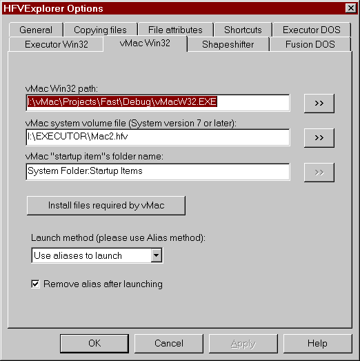

vMac Win32 path:
Make this to point to the vMac.exe (may be named differently).
vMac system volume file:Should be the HFV or DSK file path where you boot vMac from. After any changes, press Install files required by vMac.
vMac "startup item"s folder name:The default value is usually fine. Modify if you have renamed your system folder.
Install files required by vMac:This command does the following:Launch method:Create a folder named "vMacLink".The purpose of all this is to make a fresh vMac environment without modifying your current vMac.ini file. HFVExplorer needs to make changes to the ini file, and I felt it would be safer this way. You need to press this button again after changing vMac system volume file.
Copy vMac.ini to "vMacLink".
Copy vMac.pram to "vMacLink".
Create a shortcut to vMac Win32 path.Always use alias launching. Apple events launching is unsupported and bound to be removed.If selected, installs a tiny application into the startup items folder. It lurks in the background for 5 seconds and removes the alias used for launching.